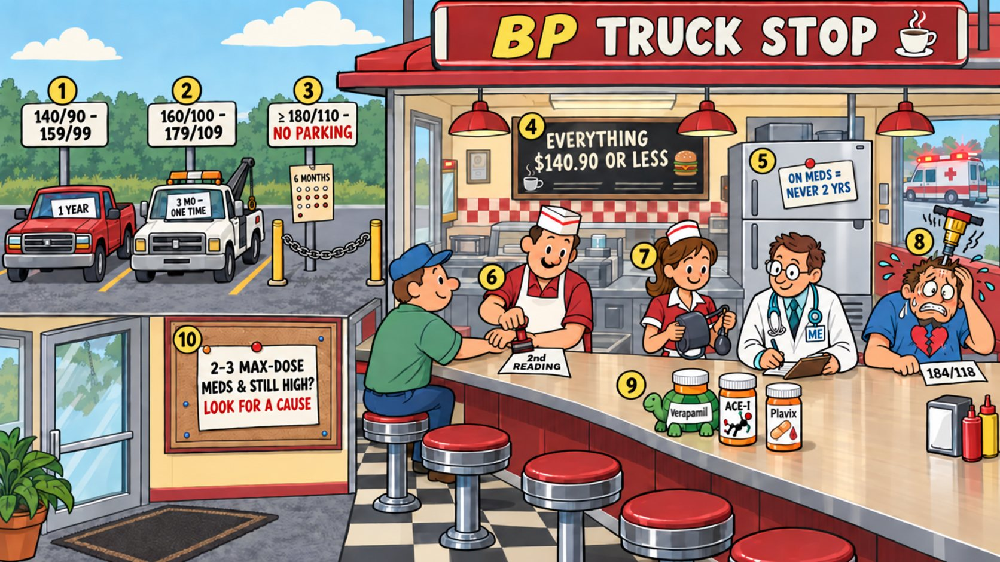

Card 4 of 13 · 49 CFR 391.41(b)(6)
The BP Truck Stop
Hypertension — staging and certification intervals, the second reading, the hypertensive emergency, and medication side effects.

0:00 / 0:00
Press play — the narrator walks the scene and the spotlight follows to each numbered object. Click any paragraph to jump there. Space play/pause · ←/→ previous/next object · [/] previous/next card.
Not started — press play, then try the questions.
What this card covers
Hypertension — staging and certification intervals, the second reading, the hypertensive emergency, and medication side effects. Standard: 49 CFR 391.41(b)(6).
The hooks to keep
- Stage 1 parks for a year
- Stage 2 gets one three-month tag
- Stage 3 can't park until ≤ 140/90, then six months at a time
- On meds means never two years
- 184/118 with symptoms calls the ambulance
Test yourself
9 questions on this card
Answer each question to see the explanation, its sources, and the cheat-sheet entry.